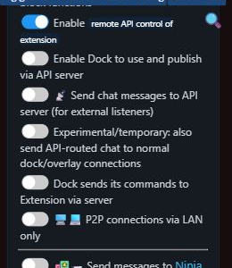

Learn how to set up, customize, and get the most out of Social Stream Ninja
One session ID connects everything: use the same ?session= value in your dock and overlay URLs.
Search, or open one category. Start with OBS if you just need chat on screen.
No matching guides found.
Before you can use Social Stream Ninja, you'll need to install it first. There are multiple ways to install the browser extension:
For detailed installation instructions, please visit the Download page.
Once installed, follow these steps to start using Social Stream Ninja:
Note: For the best experience, keep chat windows visible (not minimized) when using the browser extension.
Social Stream Ninja works with 100+ platforms. Here's how to connect to the most popular ones:
You can customize both the dashboard and overlay by adding parameters to their URL. Some examples:
&darkmode - Enables dark mode for the dashboard&scale=2 - Doubles the size/resolution of all elements&hidesource - Hides platform icons (YouTube, Twitch, etc.)&compact - Removes spacing between name and message&inline - Flows the message beside the name while keeping normal spacing&autoshow - Auto-features messages as they appear (about 2 per 3 seconds)
&showtime=20000 - Auto-hides selected messages after 20 seconds&showsource - Shows the platform icons next to usernames&fade - Makes featured messages fade in instead of popping up&swipe - Makes featured messages swipe in from the left¢er - Centers featured messages on screen
For easier URL management, try our URL Parameter Editor Tool.
There are several ways to customize the appearance with CSS:
In OBS, you can add custom CSS to the browser source:
body { background-color: rgba(0, 0, 0, 0); margin: 0px auto; overflow: hidden; }
:root {
--comment-color: #090;
--comment-bg-color: #DDD;
--comment-border-radius: 10px;
--comment-font-size: 30px;
--author-border-radius: 10px;
--author-bg-color: #FF0000;
--author-avatar-border-color: #FF0000;
--author-font-size: 32px;
--author-color: blue;
--font-family: "Arial", sans-serif;
}
.hl-name {
padding: 2px 10px !important;
}
Add CSS directly through the extension menu:
Choose from pre-styled templates that include CSS built-in:
YOURSESSIONID in the template URL with your session IDExample: https://socialstream.ninja/themes/pretty.html?session=YOURSESSIONID
Name colors need two settings: a general color source under Message - Styling and the Dock display toggle under Message - Visibility.
Open the chat name colors guide for screenshots, color choices, troubleshooting, and CSS examples.
Bring your own fonts to dock.html või featured.html without relying on Google/System fonts.
@font-face.&css=, &b64css=, &font=, või &googlefont=.Open the self-hosted fonts guide for step-by-step hosting and CSS examples.
Social Stream Ninja can read chat messages aloud using Text-to-Speech technology:
&speech=en-US to your featured.html or dock.html URL&pipervoice=pt_BR-faber-medium or eSpeak &espeakvoice=pt-br, while Spanish can use Piper &pipervoice=es_ES-davefx-medium or eSpeak &espeakvoice=es.&pitch=1&volume=1&rate=1&ttsprovider=kokoro&ttsprovider=piper&espeakvoice=pt-br and Spanish &espeakvoice=es&ttsprovider=kitten&ttsprovider=openai&openaiendpoint=http://localhost:8880/v1/audio/speechWant to keep it local and private? Vt Kohalik AI TTS-juhend for full setup instructions including self-hosted server options and OBS audio capture.
Social Stream Ninja can use AI in several different ways. Choose the workflow before choosing a provider.
chatgpt.com tab without an API key.Organize how messages appear in your overlay:
Capture non-chat events like new followers, subscriptions, raids, and donations from your streaming platforms.
Note: Donation-style events (Super Chats, Bits, Tips) forward automatically regardless of this toggle. The toggle is primarily for follower/subscriber alerts.
For a complete list of event payloads and data fields, see the Sündmuste teatmik documentation.
Show Twitch Hype Train and Treasure Train progress as a Twitch-style top bar in OBS.
Highlight brand-new chatters, add the optional leaf badge, or use a first-time-only dock beep.
The Event Flow Editor is a powerful node-based automation system for building custom workflows. It's the "advanced automation" layer that lets you script your own routing logic.
For audio, media overlays, and OBS actions to work, you need to add the Flow Actions page as a browser source in OBS:
Tähtis: Current Relay Chat actions skip recognized reflections automatically. Use a Reflection Filter node to control whether captured echoes appear in the Dock and overlays. See the chat relay walkthrough for setup. For detailed documentation, see the Event Flow juhend. For Kick reward sounds or media, use the Kick Channel Points / Rewards guide.
Control Social Stream Ninja directly from Stream Deck, MIDI controllers, or keyboard hotkeys.
Tip: MIDI is perfect for hands-free stream control. Use a foot pedal to trigger alerts or a knob to adjust volume levels.
Create interactive bot commands and automated responses for your chat.
!joke - Sends a random geeky dad joke!hi - Auto-greets viewers!cycle - Allows viewers to change OBS scenes (with permission)For more complex commands, use the Event Flow Editor:
Requirements: Auto-responses work best with Chromium-based browsers. Chat windows must remain visible, and you must have permission to post on the platform.
Connect external donation platforms to display tips and purchases in your stream overlay.
Global settings and tools → Mechanics, enable remote API control of extension&server, &server2, või &server3 for donation webhooksThe normalized donation is shared with chat, alerts, Event Flow, and the Tip Jar/Goal Meter.

| Platform | Webhook URL | Event Type |
|---|---|---|
| Stripe | https://io.socialstream.ninja/{sessionID}/stripe |
checkout.session.completed |
| Ko-Fi | https://io.socialstream.ninja/{sessionID}/kofi |
Public tips, memberships, shop orders and commissions |
| Buy Me A Coffee | https://io.socialstream.ninja/{sessionID}/bmac |
Tips, memberships, shop orders, commissions and wishlist funding |
| Fourthwall | https://io.socialstream.ninja/{sessionID}/fourthwall |
Orders, gifts, donations and new subscriptions |
https://io.socialstream.ninja/YOUR_SESSION_ID/stripecheckout.session.completedTesting: Use Stripe's Test Mode with card 4242 4242 4242 4242, any future expiry, any CVC.
Kasutage illustrated setup guide for Fourthwall, Ko-fi and Buy Me a Coffee, including receiver status, isolated previews and product import.
You can also export chat data to external services:
Solutions for common issues with the browser extension
Chat messages stop appearing when browser windows are in the background or minimized. This happens because browsers throttle background tabs to save resources.
chrome://flags/#enable-throttle-display-none-and-visibility-hidden-cross-origin-iframeschrome://flags/#calculate-native-win-occlusionchrome://settings/performanceA blue debugging bar appears or automated responses don't work when trying to use bot commands or auto-responses.
Join our community Discord server where the developer and other users can help you troubleshoot issues.